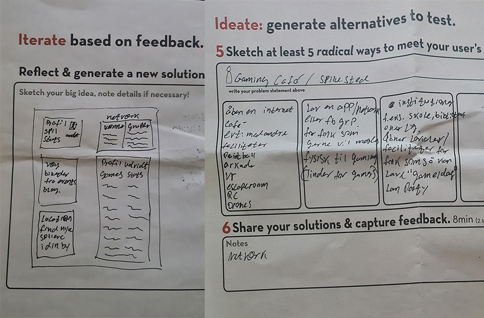
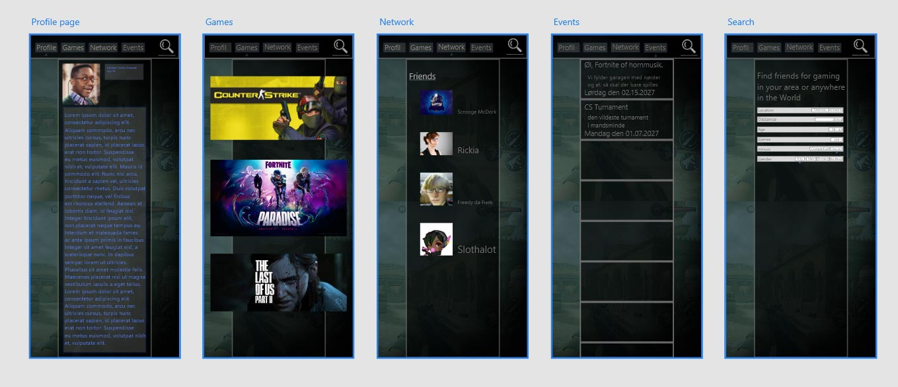
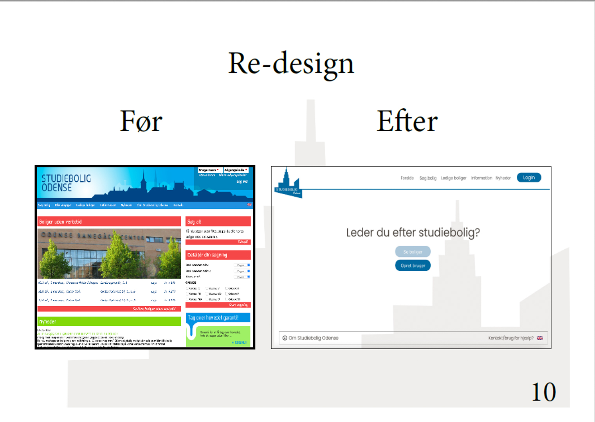
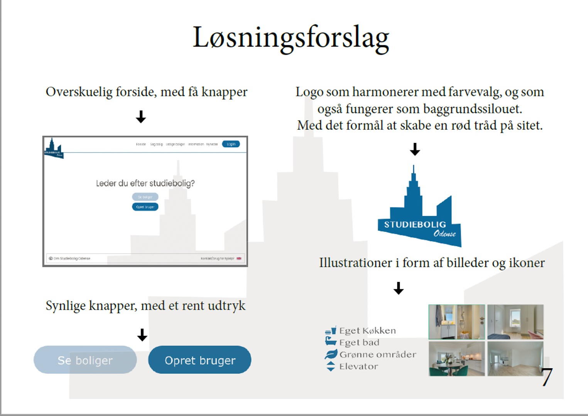
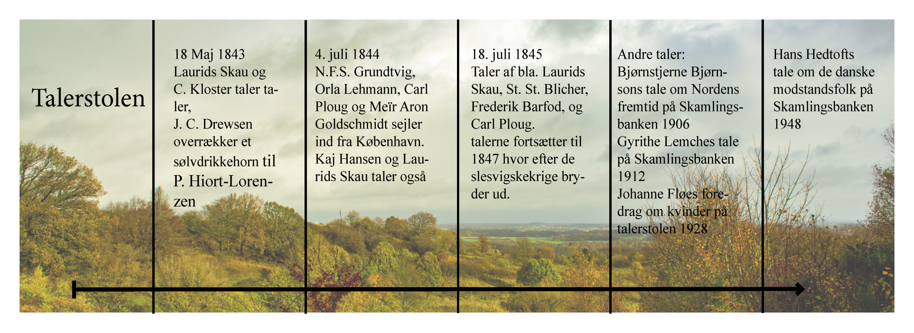
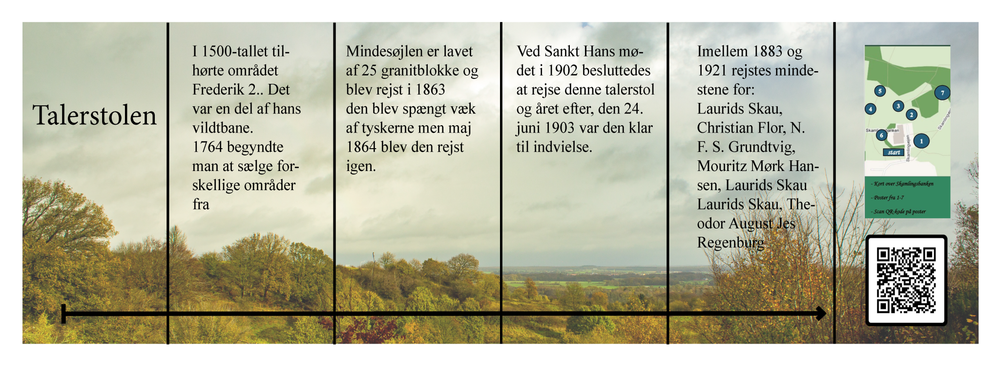

Udvalg af første semesters projekter
Design thinking workshop modul 1
Opgaven, experience their city, gik ud på at lave en prototype af en app
som kunne forbedre min samarbejdspartners oplevelse af bylivet.
I mit interveiw med Gustav fandt jeg frem til at han godt kunne tænke sig
en app som kunne bringe gamere sammen til Lan-parties eller lign.
Mit design trækker inspiration fra andre platforme som Steam, tinder og
Facebook med henblik på at skabe fællesskaber både internationalt til
online spil men også lokalt så folk og virksomeheder kan skabe spille
events.
Prototypen kan ses
her


Re-design af hjemmeside modul 1
I denne opgave valgte vi i gruppen at lave et re-design af siden
www.studiebolig-odense.dk
Første billede viser før og efter så du kan sammenligne vores design med
det eksisterende.
Andet billede viser et forslag til et nyt visuelt design, med mindre
forstyende elementer og et enklere farvevalg som, vi i vores bruger test,
har påvist er nemmere for brugere at navigere og overskue.


Installationsprojekt modul 2
På Skamlingsbanken står en stensætning ved navn talerstolen som har været
centrum for mange taler siden den blev sat i 1903 men området har været
brugt siden 1840'erne.
I andet modul lavede vi et istallations projekt med henblik på at formidle
talerstolen. her lagde vi vægt på at det eksisterende publikum er 60+ og
at vi gerne ville gøre det mere interessant for børn og unge.
Det gjorde vi ved at lave prototyper til en infoskærm som kunne stilles op
på stedet, en brochure som kunne give et overblik over historien og en app
som ville fungere som en skattejagt hvor yngre besøgende kunne finde mere
information om de som har talt i område, hvad det talte om og den
histiroske sammenhæng.
Brochuren


Skattejagt prototypen kan ses
her
Infoskærm prototypen kan ses
her